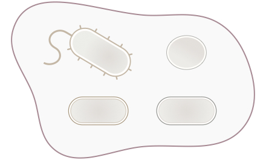

Individuality & Selection of Microbial Communities

Individuality & Selection of Microbial Communities
All living forms are organized in a nested hierarchy. Genes and other replicating nucleic acids formed genomes; Eukaryotic cells were formed by the union of free-living eubac- teria and proto-eukaryotes. In all cases, previously autonomous entities came together to form new wholes higher in the biological ladder. This dynamic process is a transition in individuality. The objective of this report is to assess the evolutionary individuality of bacterial plasmids, autonomous replicating DNA entities enclosed within bacterial cells. Although plasmids are commonly understood as parts of the bacterial genome, there is a large body of research that considers plasmids are biological individuals in their own right.
Other...
Evolutionary Individuality of Bacterial Plasmids
How can we artificially select biological entities above the organismal* level?
Other...